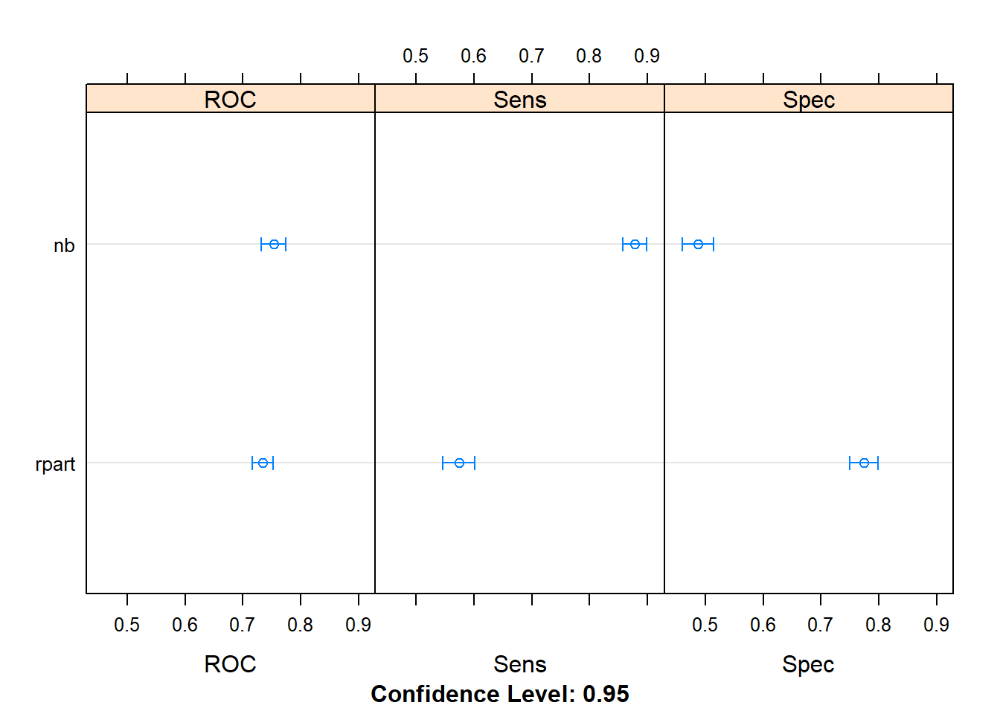
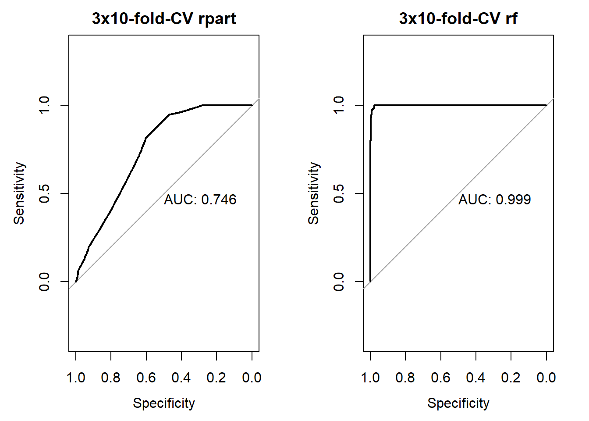

3.12 Assignment feature selection
2020-05-11
3.12.1 Boruta Package in R
113 patients at the Los Angeles County Hospital Shock Unit (afifi.sav)
Build a model to predict the Hemoglobin at time 2 (HGB2) using the patients characteristics (AGE and SEX) and measurements taken at admission (SBP1, MAP1, HEART1, DBP1, CVP1, BSA1, CARDIAC1, APPTIME1, CIRCTIME1, URINE1, PLASVOL, REDCELL1, HGB1, HCT1)
Read data
## 'data.frame': 113 obs. of 17 variables:
## $ IDNUM : num 340 412 426 444 515 517 518 522 526 527 ...
## ..- attr(*, "format.spss")= chr "F4.0"
## ..- attr(*, "display_width")= int 7
## $ AGE : num 70 56 47 75 61 68 71 30 78 40 ...
## ..- attr(*, "format.spss")= chr "F4.0"
## ..- attr(*, "display_width")= int 6
## $ SEX : 'haven_labelled' num 0 1 1 0 1 1 0 0 1 1 ...
## ..- attr(*, "format.spss")= chr "F3.0"
## ..- attr(*, "display_width")= int 5
## ..- attr(*, "labels")= Named num 0 1
## .. ..- attr(*, "names")= chr "female" "male"
## $ SBP1 : num 62 83 80 62 128 114 102 97 90 112 ...
## ..- attr(*, "format.spss")= chr "F4.0"
## ..- attr(*, "display_width")= int 6
## $ MAP1 : num 38 66 64 51 91 88 74 71 60 61 ...
## ..- attr(*, "format.spss")= chr "F4.0"
## ..- attr(*, "display_width")= int 6
## $ HEART1 : num 53 110 84 97 107 95 112 93 113 136 ...
## ..- attr(*, "format.spss")= chr "F4.0"
## $ DBP1 : num 29 60 55 43 71 73 65 55 46 48 ...
## ..- attr(*, "format.spss")= chr "F4.0"
## ..- attr(*, "display_width")= int 6
## $ CVP1 : num 10 1 1 13 11.5 1.7 1.9 15.1 8.6 25.7 ...
## ..- attr(*, "format.spss")= chr "F5.1"
## ..- attr(*, "display_width")= int 7
## $ BSA1 : num 1.87 1.82 1.8 1.3 NA 1.41 1.69 1.58 1.63 NA ...
## ..- attr(*, "format.spss")= chr "F5.2"
## ..- attr(*, "display_width")= int 7
## $ CARDIAC1 : num 0.9 1.26 1.1 0.6 2.3 0.66 1.33 2.86 3.3 1.2 ...
## ..- attr(*, "format.spss")= chr "F5.2"
## ..- attr(*, "display_width")= int 10
## $ APPTIME1 : num 19 22.1 12 15 7.4 11.5 15.3 6 10 10.7 ...
## ..- attr(*, "format.spss")= chr "F5.1"
## ..- attr(*, "display_width")= int 10
## $ CIRCTIME1: num 39 40.7 28 59 19.3 22.5 31.3 14.4 19.4 34.5 ...
## ..- attr(*, "format.spss")= chr "F5.1"
## ..- attr(*, "display_width")= int 11
## $ URINE1 : num 0 110 80 5 140 110 80 10 21 1 ...
## ..- attr(*, "format.spss")= chr "F4.0"
## $ PLASVOL1 : num 39.4 36.2 37.3 33.5 74.7 56.2 32.1 55.7 65.3 70.9 ...
## ..- attr(*, "format.spss")= chr "F5.1"
## ..- attr(*, "display_width")= int 10
## $ REDCELL1 : num 24.1 24 27.2 20.8 18.6 20.6 14.1 15.1 16.8 16.2 ...
## ..- attr(*, "format.spss")= chr "F5.1"
## ..- attr(*, "display_width")= int 10
## $ HCT1 : num 40 50 49 43 24 34 40.3 30 27 42 ...
## ..- attr(*, "format.spss")= chr "F5.1"
## ..- attr(*, "display_width")= int 7
## $ HGB2 : num 11.2 15.4 9.9 10.9 9.8 10 9.4 10 10 9.1 ...
## ..- attr(*, "format.spss")= chr "F5.1"
## ..- attr(*, "display_width")= int 7Implement Boruta
results from boruta
## Boruta performed 99 iterations in 15.00799 secs.
## 5 attributes confirmed important: AGE, CARDIAC1, CIRCTIME1, HCT1,
## REDCELL1;
## 7 attributes confirmed unimportant: CVP1, HEART1, IDNUM,
## PLASVOL1, SBP1 and 2 more;
## 4 tentative attributes left: APPTIME1, BSA1, DBP1, MAP1;selected features
plot(boruta, xlab = "", xaxt = "n")
lz<-lapply(1:ncol(boruta$ImpHistory),function(i) boruta$ImpHistory[is.finite(boruta$ImpHistory[,i]),i])
names(lz) <- colnames(boruta$ImpHistory)
Labels <- sort(sapply(lz,median))
axis(side = 1,las=2,labels = names(Labels),
at = 1:ncol(boruta$ImpHistory), cex.axis = 0.7)
## [1] "AGE" "CARDIAC1" "CIRCTIME1" "REDCELL1" "HCT1"Extract attribute statistics
| meanImp | medianImp | minImp | maxImp | normHits | decision | |
|---|---|---|---|---|---|---|
| IDNUM | 0.1473461 | 0.4062690 | -2.2900612 | 1.9708158 | 0.0000000 | Rejected |
| AGE | 4.1293472 | 4.1108677 | 0.9760621 | 7.5978631 | 0.7171717 | Confirmed |
| SEX | -0.4363506 | -0.7385775 | -1.5190680 | 1.0372338 | 0.0000000 | Rejected |
| SBP1 | 1.2675332 | 1.3136094 | -0.9877035 | 2.8263270 | 0.0000000 | Rejected |
| MAP1 | 3.2799824 | 3.2208108 | 1.2710892 | 8.1144665 | 0.6060606 | Tentative |
| HEART1 | 0.4802892 | 0.2703868 | -0.8675089 | 2.9051318 | 0.0000000 | Rejected |
| DBP1 | 2.2732396 | 2.1263872 | 0.0189792 | 5.9360089 | 0.3434343 | Tentative |
| CVP1 | -0.2915782 | -0.5958642 | -1.9801162 | 1.8558854 | 0.0000000 | Rejected |
| BSA1 | 3.3493170 | 3.2751972 | 1.5107522 | 7.1322729 | 0.6161616 | Tentative |
| CARDIAC1 | 4.4206597 | 4.3992274 | 2.2478339 | 6.4482453 | 0.7878788 | Confirmed |
| APPTIME1 | 2.6313731 | 2.5778063 | 0.4829264 | 5.2601524 | 0.4141414 | Tentative |
| CIRCTIME1 | 7.7565666 | 7.7979221 | 5.6473791 | 10.0225069 | 0.9797980 | Confirmed |
| URINE1 | -0.3816787 | -0.2914073 | -1.2744776 | 0.3743351 | 0.0000000 | Rejected |
| PLASVOL1 | 1.6590866 | 1.6356248 | -0.6676299 | 3.3260795 | 0.0000000 | Rejected |
| REDCELL1 | 4.2309630 | 4.1903148 | 1.3766086 | 6.8995463 | 0.7373737 | Confirmed |
| HCT1 | 8.7953939 | 8.6546255 | 6.6957330 | 10.8857185 | 1.0000000 | Confirmed |
with the selected features, fit a linear model
#form<-getConfirmedFormula(boruta)
form<-getNonRejectedFormula(boruta)
model<-lm(form, data = data2)
library(broom)
tidy(model)| term | estimate | std.error | statistic | p.value |
|---|---|---|---|---|
| (Intercept) | 1.0223582 | 1.8418376 | 0.5550751 | 0.5801480 |
| AGE | 0.0117378 | 0.0118097 | 0.9939077 | 0.3227926 |
| MAP1 | -0.0065953 | 0.0342614 | -0.1925005 | 0.8477611 |
| DBP1 | 0.0261556 | 0.0429193 | 0.6094124 | 0.5437059 |
| BSA1 | 2.2066938 | 0.8543697 | 2.5828324 | 0.0113252 |
| CARDIAC1 | 0.0361544 | 0.1477869 | 0.2446385 | 0.8072640 |
| APPTIME1 | 0.0142515 | 0.0624277 | 0.2282883 | 0.8199128 |
| CIRCTIME1 | 0.0391994 | 0.0334208 | 1.1729034 | 0.2437671 |
| REDCELL1 | 0.0370067 | 0.0185559 | 1.9943391 | 0.0489812 |
| HCT1 | 0.0604300 | 0.0275308 | 2.1950001 | 0.0306000 |
| r.squared | adj.r.squared | sigma | statistic | p.value | df | logLik | AIC | BIC | deviance | df.residual |
|---|---|---|---|---|---|---|---|---|---|---|
| 0.3512673 | 0.2898084 | 1.649498 | 5.715485 | 0.0000026 | 10 | -196.2836 | 414.5672 | 443.7608 | 258.4801 | 95 |
## HGB2 ~ AGE + MAP1 + DBP1 + BSA1 + CARDIAC1 + APPTIME1 + CIRCTIME1 +
## REDCELL1 + HCT1
## <environment: 0x000000002d367928>plot model assumptions

references
https://www.analyticsvidhya.com/blog/2016/03/select-important-variables-boruta-package/
https://www.andreaperlato.com/mlpost/feature-selection-using-boruta-algorithm/
https://earlglynn.github.io/RNotes/package/Boruta/index.html